AI for climate adaptation and mitigation
AI for environmental data, Uppsala University
Olof Mogren, RISE Research Institutes of Sweden
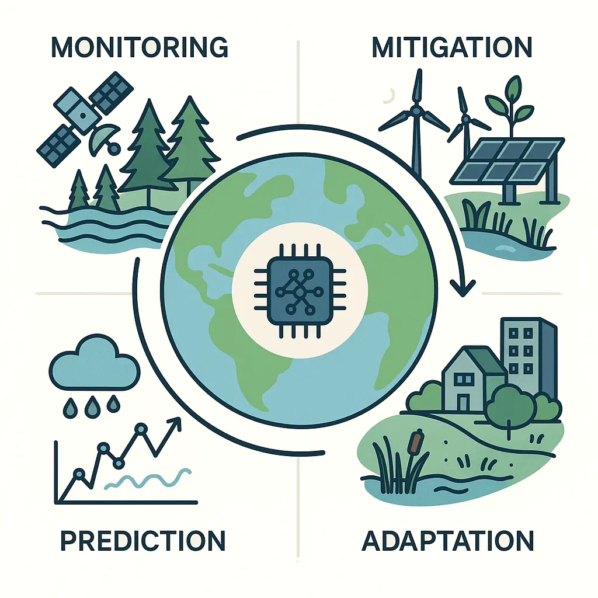
Climate change
A multifaceted challenge benefiting from AI at every level
- Monitoring
- remote sensing, sensor networks, bioacoustics
-
Mitigation
- Emission reduction and carbon sequestration
-
Adaptation
- Prediction
- Weather systems and extreme events
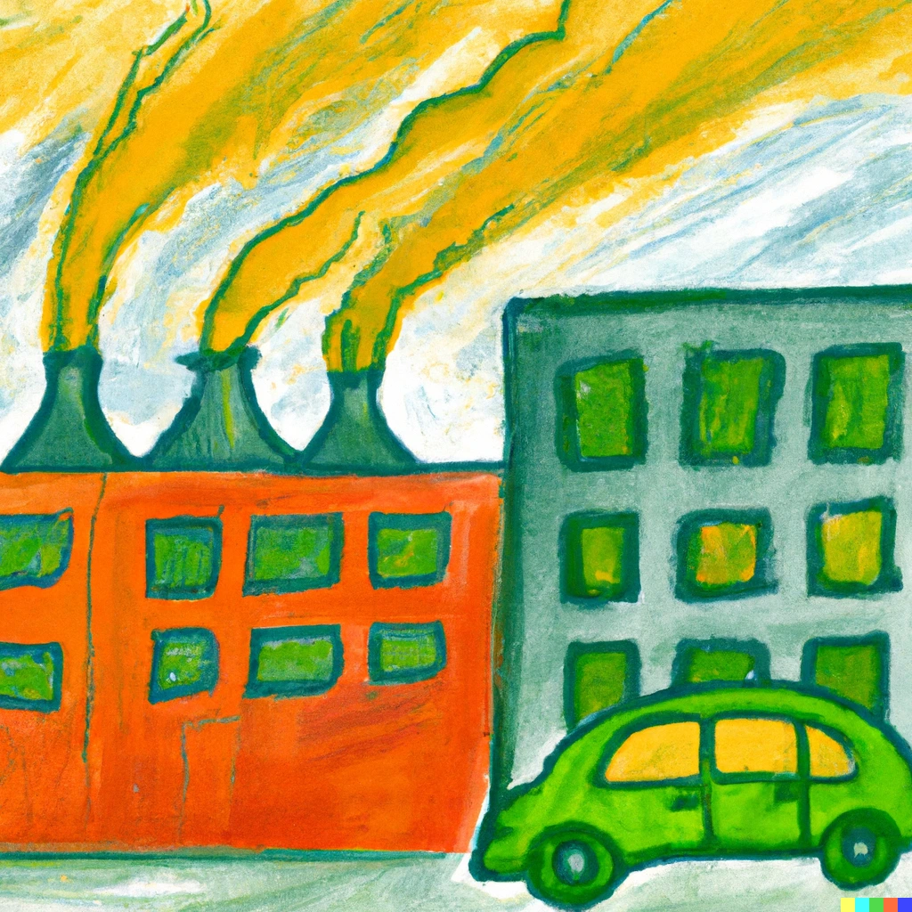
Both mitigation & adaptation necessary
- We are heading for 2°C
- Mitigation is essential to slow warming and reduce long-term risks
- Adaptation is unavoidable, impacts are already here and will intensify
- Neither is sufficient alone
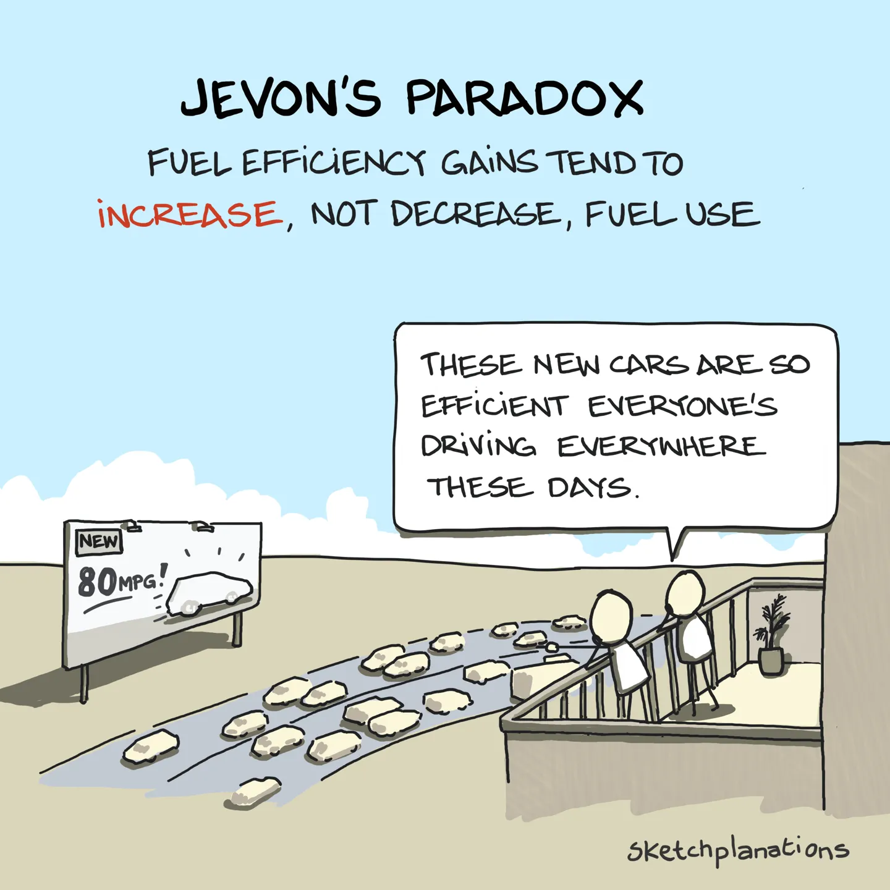
Indirect environmental effects of AI
- AI can make us more efficient
- Fast-fashion is already a burden to the environment
- Jevon's paradox/rebound effects
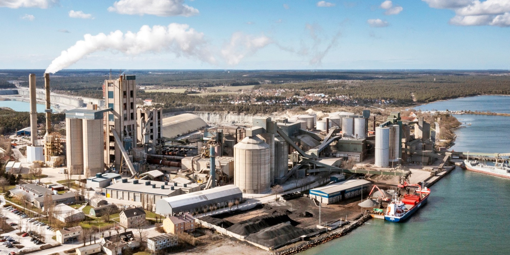
Cement: 8% of global GHG emissions
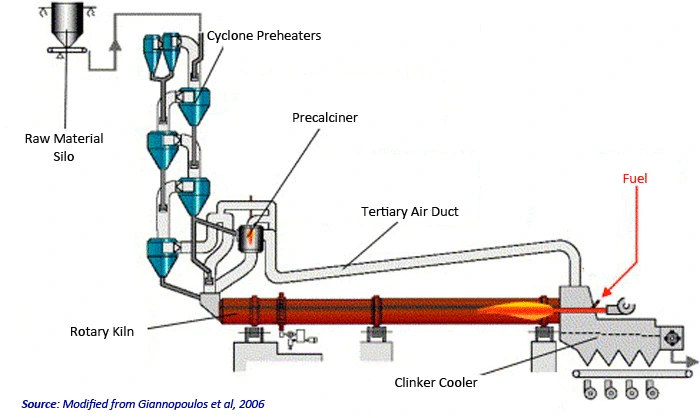
AI optimizing cement production
- Lessen demand of petroleum coke
- Optimize air temperature for the clinker kiln
- Less fuel is needed
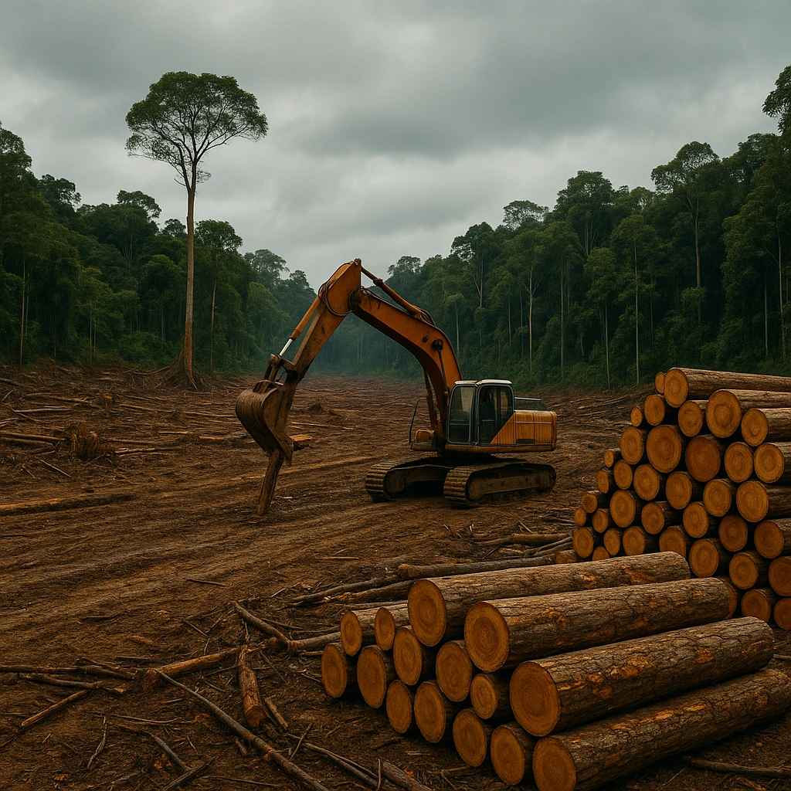
Agriculture, forestry, land use (AFOLU)
-
~22% of global GHG emissions
- Main drivers:
- Deforestation
- Methane from livestock
- Fertilizer use (N₂O)
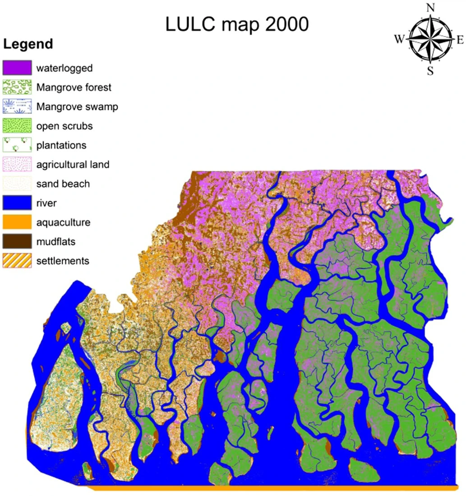
AI for agriculture and forestry
- Monitoring land use change (remote sensing)
- Optimizing fertilizer use
- Improving livestock management
- Forest management & carbon accounting
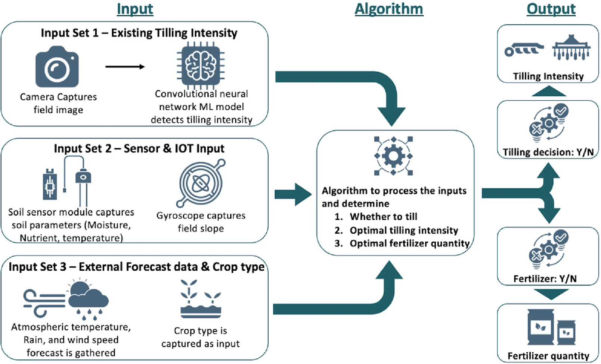
Optimizing fertilizer use
- Suggesting N,P,K dosage, tillage, timing
- Based on environmental variables
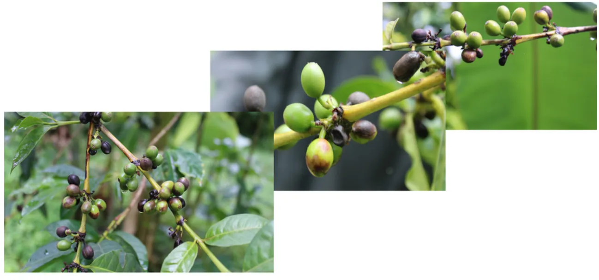
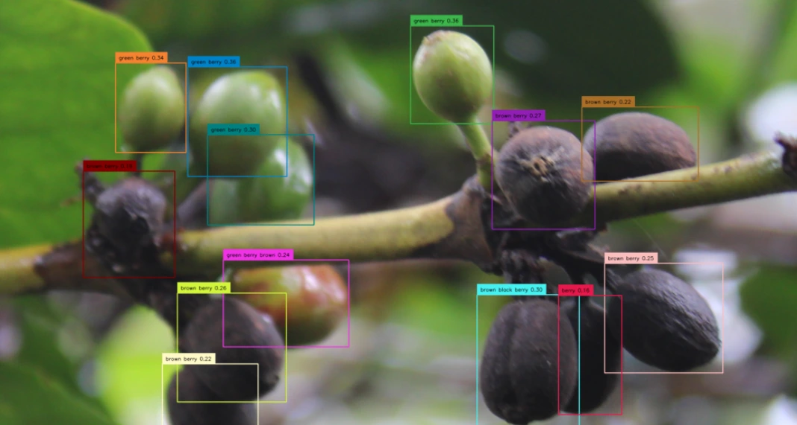
AI for climate-smart agriculture
- Precision irrigation and yield prediction
- Pest/disease detection under climate stress
- Example: ML-based decision support for smallholder farmers
AI for building optimization
- Design and materials
- Passive designs
- Heating/cooling load modeling
- Sustainable or recycled materials
- Construction and demolition
- Reduce material waste
- Optimize low-tech cooling/heating
- Operations
- Smart grid coordination
- Adaptive reuse of spaces
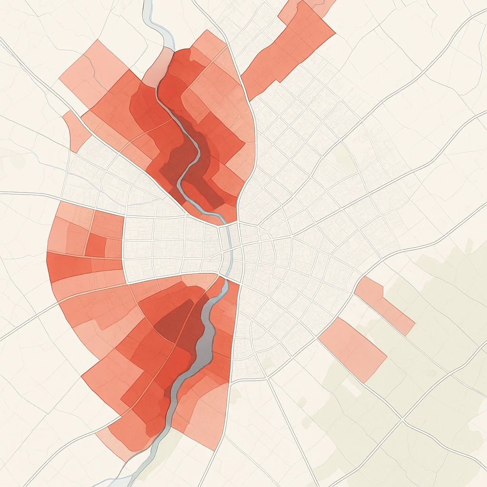
Urban flood risk forecasting
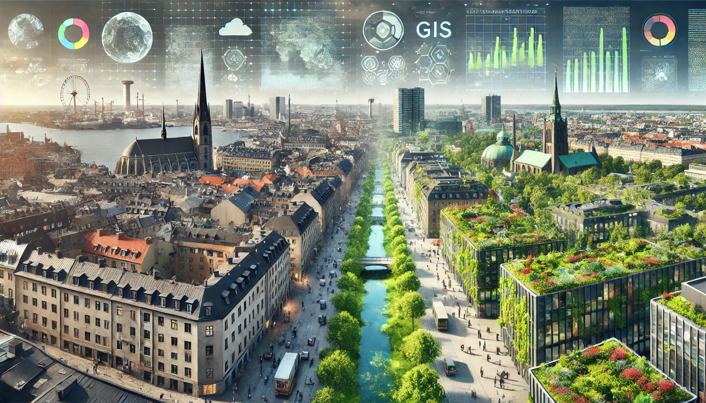
Planning urban green areas
- Optimize conversion of grey areas to green areas
- 3-30-300
- Climate resilience and biodiversity
- Cost efficiency
- Satellite data, ML, GIS
- Cooling, biodiversity, public health, and carbon benefits
- RISE, SLU, Malmö Stad, Uppsala Municipality
Detecting potential areas
for green transformation
- Identify grey spaces
- Identify areas where green transformation
- is the most useful
- is possible
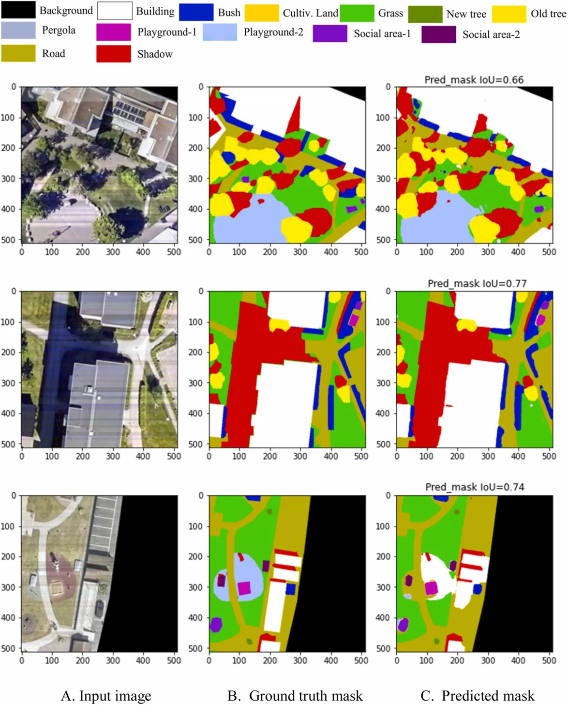
AI for urban green infrastructure
- Quantifying urban green infrastructure in Örebro (left)
- Algorithmic green infrastructure
Algorithmic green infrastructure
- Using remote sensing, geospatial data, environmental data
- Scenario planning
- Provide urban planners with AI-optimised layouts that balance multiple objectives (cooling, water, biodiversity, equity).